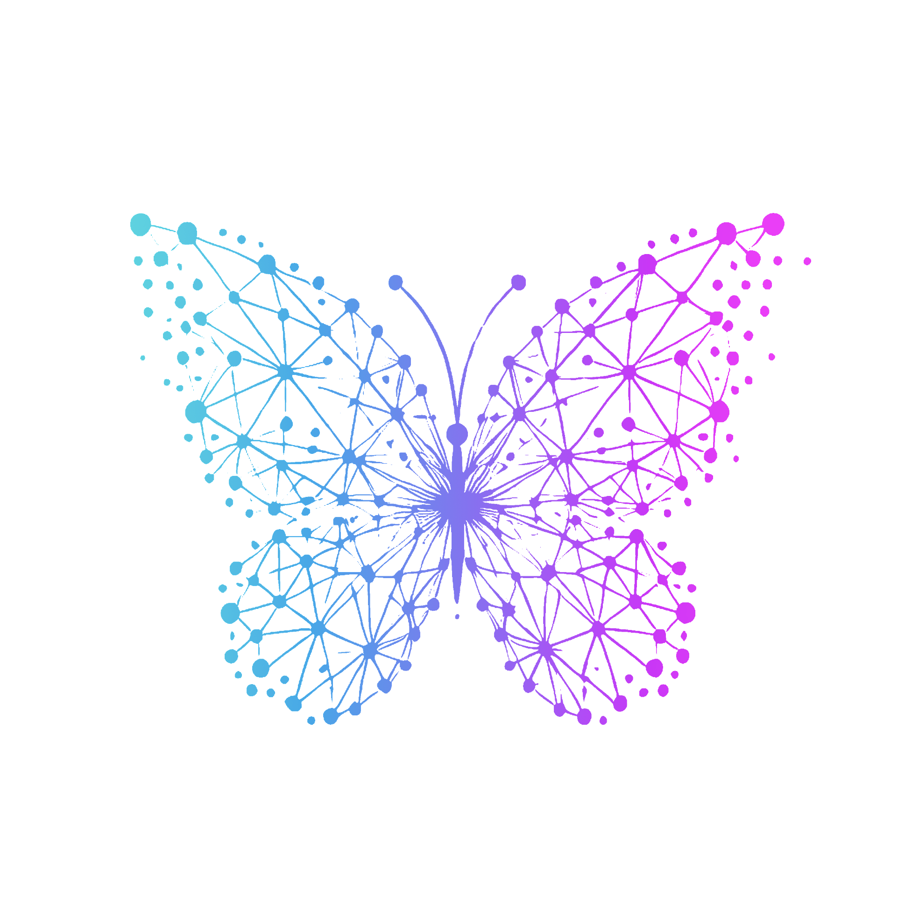

Hi, I'm Engracia Batista
NLP Engineer · LLM Evaluation · AI Security
I build and evaluate LLM systems people can trust, and help teams prove they work.
Ottawa, Ontario, Canada · Open to opportunities
NLP Engineer · LLM Evaluation · AI Security
I build and evaluate LLM systems people can trust, and help teams prove they work.
Ottawa, Ontario, Canada · Open to opportunities
About Me
Hi there! I'm Engracia, an NLP Engineer who builds and evaluates LLM systems for production software. One question drives my work: how do we know an AI system is actually working?
At memoQ, I work on evaluation frameworks for LLM output, multi-agent LLM systems that make AI judgements more reliable and traceable, and defences that harden LLM pipelines against prompt injection.
My path here is not a straight line, and that is my advantage. My first degree is in Fine Arts. I then spent 15+ years as a Project Manager and Business Analyst, founded Arrow Data Specialists, and moved into data science, BI and machine learning. So I am as comfortable with stakeholders and customers as I am with code: turning vague needs into clear requirements, success criteria and evaluation plans.
What I'm focused on next: applied AI engineering, where LLM evaluation, AI security and agentic systems matter, helping teams and customers put AI to work with confidence.
Outside work, I volunteer with the PMI (Project Management Institute) community, where my Mentoring Program won PMI-DF Project of the Year 2024, and I'm completing a Software Engineering Technology diploma at Centennial College.
📍 Ottawa, Ontario, Canada · 📧 engraciadacosta@outlook.com
Career
Build and evaluate LLM-powered features for translation software, with a focus on reliability, measurement and security. Contributed to the design and build of a multi-agent LLM system for automated quality evaluation, validated through human expert review. Designed and tested prompt injection defences for production LLM pipelines, benchmarked LLMs on quality, speed and cost (BLEU, chrF++, COMET, F-score), and turned customer feedback into prompt engineering improvements that I presented directly to customers.
Delivered strategic data projects supporting company-wide decision-making, spanning data engineering, BI architecture, ML, and AI. Led the Binóculos initiative: a full redesign of CRM data architecture and the build-out of sales intelligence pipelines and dashboards. Drove proactive pipeline visibility for Sales, Marketing, and Leadership teams. Built an ML and ETL pipeline (clustering, XGBoost, NER, PII detection) that cut data preparation from one month to under an hour.
Developed data-driven marketing strategies to support product positioning and market growth. Bridged the gap between product capabilities and customer needs using analytical insights.
Built a qualified sales pipeline across North America through market research and customer needs assessments, then built and managed a LATAM partner network: recruitment, training, joint go-to-market planning and performance monitoring.
Founded Arrow Data Specialists, leading client projects in churn analysis, sentiment analysis and market research, including an ML MVP that analysed social media sentiment for a 2018 election campaign. In parallel, led delivery of a Grafeno6 platform centralizing government education databases, and advised startups at ASTEPS and Quoda on strategy and process redesign.
Portfolio
A Claude skill and plugin that turns Claude into a coding tutor instead of a code generator, for people who need to understand, explain and defend the code they work with.
Build mode teaches while the work gets done, at three levels: a Socratic loop where you write the code, a quiz after each unit Claude builds, or a fast build with a standup-ready recap.
Explore mode is an orchestrator–worker multi-agent system for code you didn't write. Explorer agents map the codebase once, six specialist agents draw UML diagrams in parallel (component, class, sequence, activity, ER, state), and the orchestrator verifies every element against real file and line locations before showing it. Read-only subagents, the right model per job, and incremental updates keep it cheap on large repos.
View on GitHub →Deep Past Challenge (2026): trained a ByT5 neural machine translation pipeline to translate Akkadian to English, expanding the training data from 1,561 to 9,654 sentence pairs within a 9-hour GPU limit.
March Machine Learning Mania (2026): built a calibrated LightGBM ensemble predicting about 132,000 matchups, ranking 837th of 3,462 teams (top 25%).
View on Kaggle →Led end-to-end redesign of CRM data architecture at memoQ, building structured ETL pipelines and BI dashboards that transformed sales visibility. Enabled proactive pipeline management across Sales, Marketing, and Leadership.
Enterprise project at memoQAn early experiment in AI for learning: a gamified GPT where users choose an adventure, the AI builds the story, and each gateway unlocks only after solving a Python coding challenge. It led directly to my Claude Tutoring Skill.
Custom GPT experiment (retired)Expertise
Education
Writing

Chrysalytics on MediumThese days, Artificial Intelligence is taking over a lot of space automating repetitive tasks, optimizing processes, and even creative work. A reflection on what makes human skills more relevant than ever.
Read on Medium → May 15, 2025Data Visualization and Graphs: how and when to use them. A practical guide to choosing the right chart type and communicating data clearly and effectively.
Read on Medium → Apr 3, 2025A career guide for aspiring data professionals: what paths exist, what skills matter, and how to take your first real steps into the world of data.
Read on Medium → Mar 14, 2025Over the years, many articles have debated the most important career skills. With the rise of Machine Learning and AI, the answer may surprise you.
Read on Medium → Mar 14, 2024Credentials
Awarded by PMI-DF for the Mentoring Program (7th and 10th cycles), which I redesigned with a new scope and accountability mechanisms. The model is still in use and is a benchmark for chapters worldwide.
Participated in the Microsoft AI Skills Fest, an official Guinness World Record attempt for the most users to complete an online multi-level artificial intelligence lesson in 24 hours.
Microsoft skilling program in natural language processing, completed as part of the Women in Cloud initiative.
Completed HubSpot's Super Admin Bootcamp, gaining advanced expertise in portal configuration, user management, data architecture, and CRM administration at scale.
Community